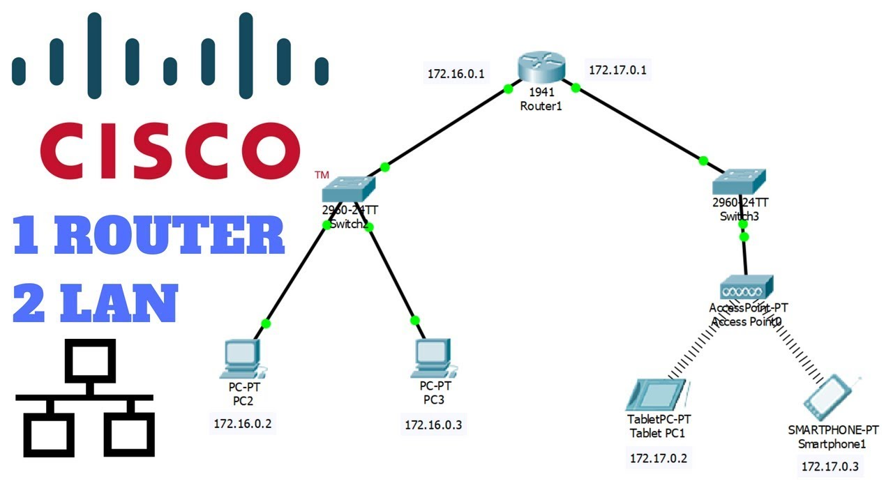
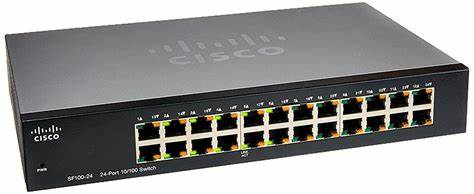

Cisco Packet Tracer è un software di simulazione di reti sviluppato da Cisco Systems. È uno strumento utilizzato per la progettazione, la creazione e la configurazione di reti di computer virtuali.
Scopo e vantaggi
Cisco Packet Tracer consente agli utenti di simulare, creare e testare reti virtuali, fornendo un ambiente sicuro e controllato per l'apprendimento e la pratica delle competenze di networking.
Guida all'installazione e requisiti di sistema
La guida all'installazione fornisce istruzioni dettagliate su come installare Cisco Packet Tracer sul proprio sistema e i requisiti hardware e software necessari.
Un po' di storia di Cisco Packet Tracer
Le origini
Esplora il background e l'evoluzione di Cisco Packet Tracer dalle sue prime versioni fino ai giorni nostri.
Sviluppi chiave
Scopri i momenti cruciali nella storia di Cisco Packet Tracer e come hanno contribuito alla sua crescita e popolarità.
Innovazioni e aggiornamenti
Approfondisci le innovazioni tecnologiche e gli aggiornamenti più recenti che hanno reso Cisco Packet Tracer uno strumento indispensabile per gli appassionati di reti.
Impatto e futuro
Analizza l'impatto di Cisco Packet Tracer sul settore delle reti e le prospettive future di questa potente piattaforma di simulazione.
Funzionalità di Cisco Packet Tracer
Simulazione di reti
Cisco Packet Tracer consente agli utenti di simulare reti virtuali e testare diverse configurazioni di rete.
Creazione e configurazione di topologie di rete
Gli utenti possono creare e configurare topologie di rete complesse utilizzando una vasta gamma di dispositivi di rete Cisco.
Implementazione di dispositivi di rete Cisco
Cisco Packet Tracer offre una vasta selezione di dispositivi di rete Cisco che possono essere implementati e configurati nelle topologie di rete.
Strumenti di analisi e diagnostica
Packet Tracer fornisce strumenti per monitorare, analizzare e diagnosticare reti virtuali.
Dispositivi e Tecnologie Supportate
Router Cisco
cos'è un Router?
Firewall Cisco
cos'è un Firewall?
Switch Cisco
cos'è uno Switch?
Telefoni IP Cisco
cos'è un telefono IP?
Dispositivi wireless Cisco
cos'è un Dispositivo wireless?
Altri dispositivi e tecnologie
Altri dispositivi : server, hub, etc.
Introduzione a Cisco Packet Tracer
Creazione di un nuovo progetto
Come iniziare un nuovo progetto e iniziare a creare e configurare una rete virtuale.
Aggiunta e configurazione di dispositivi
Come aggiungere dispositivi di rete alla topologia e configurarli secondo le proprie esigenze.
Configurazione di connessioni e interfacce
Come collegare i dispositivi tra loro e configurare le interfacce di rete.
Configurazione di protocolli di rete
Come configurare protocolli di rete come IPv4, IPv6, DHCP, ecc. (nel video si usa un router con funzione di server DHCP)
Esercizi e Progetti Pratici
Esercizi di configurazione di base
Esercizi pratici per acquisire competenze di base nella configurazione di dispositivi di rete.
Progetti di reti LAN
Progetti pratici per la progettazione e l'implementazione di reti locali.
Progetti di reti WAN
Progetti pratici per la progettazione e l'implementazione di reti wide area.
Implementazione di servizi di rete
Progetti pratici per l'implementazione di servizi di rete come VPN, VoIP, etc.
Risorse di Apprendimento Aggiuntive
Tutorial video
Risorse video per imparare ad utilizzare Packet Tracer.
Guide passo-passo
Guide dettagliate per l'apprendimento delle funzionalità avanzate di Packet Tracer.
Comunità online e forum di discussione
Risorse online per chiedere aiuto, condividere esperienze e apprendere dagli altri utenti di Packet Tracer.
Utilizzo e vantaggi
Dispositivi di rete preconfigurati
Simulazione realistica delle reti
Apprendimento pratico
Supporto per lezioni e laboratori
Sviluppo delle competenze pratiche
Che cos'è Cisco Packet Tracer?
Cisco Packet Tracer è un software di simulazione di reti sviluppato da Cisco Systems. È uno strumento utilizzato per la progettazione, la creazione e la configurazione di reti di computer virtuali.
Cisco Packet Tracer è molto più di un semplice software di simulazione di reti. È uno strumento versatile e potente che consente agli utenti di creare ambienti di rete virtuali complessi e realistici. Grazie alla sua interfaccia intuitiva e alle sue funzionalità avanzate, gli studenti e i professionisti possono progettare e configurare reti informatiche complete, comprendendo sia l'hardware che il software utilizzati nei dispositivi di rete reali. Inoltre, Cisco Packet Tracer offre una vasta gamma di dispositivi di rete preconfigurati, come router, switch, firewall e altri componenti, consentendo agli utenti di simulare situazioni reali e di testare le proprie competenze senza la necessità di disporre di una vasta gamma di hardware fisico.
Scopo e vantaggi
Cisco Packet Tracer consente agli utenti di simulare, creare e testare reti virtuali, fornendo un ambiente sicuro e controllato per l'apprendimento e la pratica delle competenze di networking.
Cisco Packet Tracer è uno strumento cruciale nell'apprendimento e nella pratica delle competenze di networking. Permette agli utenti di simulare reti virtuali in un ambiente sicuro, consentendo loro di sperimentare configurazioni complesse senza rischi. Facilmente accessibile, offre un'esperienza interattiva che aiuta gli studenti a comprendere meglio i concetti teorici, fornendo strumenti avanzati per monitorare il traffico di rete e risolvere problemi. È gratuito per gli studenti e gli educatori tramite Cisco Networking Academy, rendendolo ampiamente utilizzato nell'istruzione e nella formazione. Esso è essenziale per l'acquisizione di competenze pratiche e problem-solving nel networking, grazie alla sua facilità d'uso e alla sua versatilità.
Guida all'installazione e requisiti di sistema
La guida all'installazione fornisce istruzioni dettagliate su come installare Cisco Packet Tracer sul proprio sistema e i requisiti hardware e software necessari.
Le origini
Esplora il background e l'evoluzione di Cisco Packet Tracer dalle sue prime versioni fino ai giorni nostri.
Negli anni 2000, Cisco Systems ha sviluppato Cisco Packet Tracer per supportare il programma Cisco Networking Academy, che forniva formazione pratica nel networking. L'obiettivo era superare le limitazioni nell'accesso a dispositivi di rete reali, offrendo agli studenti un'alternativa virtuale. La prima versione è stata rilasciata nel 2005, fornendo un ambiente virtuale per la progettazione e la simulazione di reti. Nel corso degli anni, il software è stato costantemente migliorato, diventando uno strumento potente per l'apprendimento delle competenze di networking. È diventato ampiamente utilizzato in istituti educativi e aziende in tutto il mondo, mantenendo il passo con gli sviluppi tecnologici del settore. Oggi, Cisco Packet Tracer è riconosciuto come uno degli strumenti principali nell'istruzione e nella formazione in networking, grazie alla sua continua evoluzione e innovazione.
Sviluppi chiave
Scopri i momenti cruciali nella storia di Cisco Packet Tracer e come hanno contribuito alla sua crescita e popolarità.
Cisco Packet Tracer ha segnato un punto di svolta nell'apprendimento delle reti informatiche con il suo lancio nel 2005, offrendo agli studenti e agli insegnanti un ambiente sicuro per simulare reti virtuali e acquisire competenze pratiche. Nel corso degli anni, Cisco ha costantemente migliorato il software con nuove funzionalità e miglioramenti delle prestazioni, rendendolo sempre più potente e versatile. L'integrazione con il programma Cisco Networking Academy ha ampliato la sua diffusione nelle istituzioni educative di tutto il mondo, mentre la disponibilità gratuita per gli studenti ha stimolato ulteriormente la sua adozione. Il supporto per le ultime tecnologie di rete e le certificazioni Cisco ha reso Packet Tracer un prezioso strumento per la preparazione e l'aggiornamento professionale nel settore delle reti informatiche. Questi sviluppi chiave hanno contribuito alla crescita e alla popolarità di Cisco Packet Tracer, consolidandolo come uno degli strumenti più utilizzati e apprezzati nell'istruzione e nella formazione in networking.
Innovazioni e aggiornamenti
Cisco Packet Tracer ha costantemente integrato nuove funzionalità e tecnologie tra cui:
Supporto per tecnologie emergenti:come Software-Defined Networking (SDN), Network Function Virtualization (NFV) e Internet of Things (IoT). Questo permette agli utenti di esplorare e sperimentare con le tecnologie più avanzate.
Integrazione con DevNet: consentendo lo sviluppo e il testing di soluzioni di rete basate su software.
Miglioramenti dell'interfaccia utente: rendendo il software più intuitivo e facile da usare.
Integrazione con Cisco DNA Center: L'integrazione con Cisco DNA Center consente agli utenti di simulare e testare configurazioni di rete prima di implementarle in una rete reale, offrendo un ambiente virtuale controllato.
Educazione remota: Packet Tracer supporta l'educazione remota con funzionalità di collaborazione in tempo reale, laboratori virtuali condivisibili e integrazione con piattaforme di apprendimento online.
Impatto e futuro
Analizza l'impatto di Cisco Packet Tracer sul settore delle reti e le prospettive future di questa potente piattaforma di simulazione.
Impatto sull'istruzione: Grazie alla sua disponibilità gratuita per gli studenti e agli insegnanti è diventato uno strumento fondamentale nelle aule di tutto il mondo, aiutando a formare la prossima generazione di professionisti di networking.
Impatto professionale: Packet Tracer non è solo uno strumento educativo; è anche utilizzato da professionisti del settore per testare e validare configurazioni di rete, sviluppare e testare soluzioni, e simulare scenari di rete complessi. Questo contribuisce a ridurre i rischi e i costi. Inoltre consente ai professionisti di networking di essere più preparati ed efficienti nel loro lavoro.
Prospettive future: Le prospettive future di Cisco Packet Tracer sono molto promettenti. Con l'evoluzione continua delle reti informatiche ci sarà una crescente domanda di strumenti di simulazione avanzati come Packet Tracer per esplorare e sperimentare con queste tecnologie in un ambiente virtuale controllato.
Simulazione di reti
Cisco Packet Tracer consente agli utenti di simulare reti virtuali e testare diverse configurazioni di rete.
Gli utenti possono creare ambienti di rete virtuali complessi e realistici, replicando scenari reali o di laboratorio. Ciò consente loro di testare diverse configurazioni di rete e di esplorare vari scenari senza rischiare di compromettere reti reali o dispositivi di rete. La simulazione di reti è fondamentale per l'apprendimento pratico delle competenze di networking, consentendo agli utenti di sperimentare direttamente i concetti teorici appresi in classe o tramite la formazione online.
La simulazione di reti con Cisco Packet Tracer è un modo efficace per acquisire esperienza pratica nel campo delle reti informatiche. Gli utenti possono esplorare concetti chiave, risolvere problemi di rete e testare soluzioni in un ambiente virtuale sicuro e controllato.
Creazione e configurazione di topologie di rete
Gli utenti possono creare e configurare topologie di rete complesse utilizzando una vasta gamma di dispositivi di rete Cisco.
Gli utenti possono progettare e costruire topologie complesse utilizzando una vasta gamma di dispositivi preconfigurati come router, switch, firewall e PC. Questo offre un'esperienza pratica e interattiva per comprendere meglio i concetti di networking e sviluppare competenze pratiche. Gli utenti possono sperimentare diverse disposizioni di dispositivi, connessioni e configurazioni, esplorando scenari realistici e testando soluzioni per problemi comuni. Cisco Packet Tracer fornisce strumenti avanzati per monitorare il traffico di rete, diagnosticare problemi e testare soluzioni in un ambiente virtuale controllato, aiutando gli utenti a sviluppare competenze di risoluzione dei problemi essenziali per la gestione delle reti informatiche.
Implementazione di dispositivi di rete Cisco
Cisco Packet Tracer offre una vasta selezione di dispositivi di rete Cisco che possono essere implementati e configurati nelle topologie di rete.
Gli utenti possono scegliere tra una vasta selezione di dispositivi, come router, switch, firewall, access point wireless e telefoni IP, per creare topologie realistiche che riflettano le reti informatiche reali.
L'implementazione di questi dispositivi consente agli utenti di configurare parametri come indirizzi IP, subnetting, VLAN, routing statico o dinamico e sicurezza, personalizzando la topologia secondo le loro specifiche esigenze di rete.
Con l'ambiente completo di simulazione offerto da Cisco Packet Tracer, gli utenti possono testare e validare le loro configurazioni di rete in un ambiente virtuale sicuro. Ciò permette loro di esplorare diverse configurazioni e scenari senza il rischio di compromettere reti reali o dispositivi di rete.
Strumenti di analisi e diagnostica
Packet Tracer fornisce strumenti per monitorare, analizzare e diagnosticare reti virtuali.
Cisco Packet Tracer mette a disposizione degli utenti una serie di strumenti di monitoraggio, analisi e diagnostica per esaminare e comprendere il comportamento delle reti virtuali. Questi strumenti consentono di raccogliere dati sul traffico di rete, monitorare le prestazioni dei dispositivi, individuare e risolvere problemi di rete, e analizzare le comunicazioni all'interno della rete.
Il monitoraggio del traffico di rete è fondamentale, in quanto permette agli utenti di visualizzare il flusso di dati tra i dispositivi di rete e identificare eventuali congestioni o problemi di performance. Inoltre, Packet Tracer offre strumenti di analisi del traffico per esaminare in dettaglio i pacchetti di dati, semplificando la diagnosi dei problemi di connettività e la risoluzione dei guasti.
Oltre al monitoraggio del traffico di rete, Packet Tracer fornisce strumenti per analizzare la configurazione dei dispositivi di rete, controllare lo stato delle interfacce di rete e eseguire test di connettività tra dispositivi. Questi strumenti aiutano gli utenti a identificare e risolvere problemi di configurazione, individuare dispositivi guasti e ottimizzare le prestazioni della rete.
Cos'è un router?
Un router è un dispositivo di rete utilizzato per instradare il traffico dati tra diverse reti, come ad esempio reti locali (LAN) e reti esterne come Internet. Ecco alcune delle sue funzioni principali:
Instradamento dei pacchetti: Un router analizza gli indirizzi IP dei pacchetti di dati che riceve e determina la via ottimale per instradare questi pacchetti al loro destinatario finale.
Interconnessione di reti: Un router è in grado di connettere diverse reti tra loro, consentendo la comunicazione tra dispositivi appartenenti a reti diverse.
Sicurezza di rete: I router possono implementare funzionalità di sicurezza di rete come firewall e VPN (Virtual Private Network) per proteggere la rete e i dati degli utenti da accessi non autorizzati e minacce esterne.
Gestione del traffico: I router possono gestire il traffico di rete in modo efficiente, utilizzando tecniche come la Quality of Service (QoS) per garantire che il traffico prioritario, come il traffico voce o video, abbia la precedenza sulle altre forme di traffico.
Cos'è uno Switch?
Uno switch è un dispositivo di rete utilizzato per connettere dispositivi all'interno di una rete locale (LAN), consentendo loro di comunicare tra loro scambiando pacchetti di dati. Lo switch opera a livello di collegamento dati (livello 2 del modello OSI) ed è in grado di instradare il traffico di rete in base agli indirizzi MAC (Media Access Control) dei dispositivi collegati. Ecco alcune delle sue funzioni principali:
Instradamento del traffico: Uno switch instrada il traffico di rete tra i dispositivi collegati in base agli indirizzi MAC dei dispositivi.
Creazione di reti a commutazione: Gli switch consentono di creare reti a commutazione, in cui il traffico di rete viene instradato direttamente tra il mittente e il destinatario, anziché essere trasmesso a tutti i dispositivi sulla rete.
Segmentazione della rete: Gli switch consentono di segmentare una rete in più segmenti o VLAN (Virtual Local Area Network), consentendo di isolare il traffico di rete tra diversi gruppi di dispositivi.
Aumento della larghezza di banda: Gli switch possono aggregare più collegamenti di rete per aumentare la larghezza di banda disponibile e migliorare le prestazioni della rete.
Cos'è un Dispositivo Wireless?
Un dispositivo wireless è un dispositivo elettronico che comunica senza fili attraverso onde radio, onde infrarosse o altre tecnologie wireless. Questi dispositivi utilizzano frequenze radio o altri metodi di trasmissione senza fili per inviare e ricevere dati, consentendo la comunicazione e il trasferimento di informazioni senza la necessità di cavi fisici. Ecco alcuni esempi comuni di dispositivi wireless:
Dispositivi mobili: Questi includono smartphone, tablet, laptop e altri dispositivi portatili che si connettono a reti wireless come Wi-Fi o reti cellulari per accedere a Internet e comunicare con altri dispositivi.
Dispositivi di rete: Router wireless, access point sono dispositivi di rete che consentono di creare reti wireless locali (WLAN) e estendere la copertura della rete Wi-Fi in una determinata area.
Dispositivi di sicurezza: Telecamere di sicurezza, sistemi di allarme e sensori di movimento wireless che trasmettono dati senza fili per il monitoraggio e il controllo remoto della sicurezza di una casa o di un'azienda.
Dispositivi di intrattenimento: Questi includono televisori intelligenti, altoparlanti wireless, lettori multimediali in streaming e console di gioco che si connettono a reti wireless per lo streaming di contenuti multimediale e l'accesso a servizi di intrattenimento online.
Dispositivi IoT: Dispositivi Internet of Things (IoT) come termostati intelligenti, luci intelligenti, sensori ambientali e dispositivi per la domotica che si connettono a reti wireless per la raccolta e lo scambio di dati per l'automazione domestica e industriale.
Cos'è un Firewall?
Un firewall è un componente di sicurezza di rete progettato per proteggere una rete informatica controllando e monitorando il traffico in entrata e in uscita sulla base di un insieme di regole predefinite. Ecco alcune delle sue funzioni principali:
Filtraggio del traffico: Un firewall analizza il traffico di rete in entrata e in uscita e applica regole di filtraggio per determinare se il traffico deve essere consentito o bloccato.
Prevenzione di intrusioni: I firewall possono essere dotati di funzionalità di prevenzione delle intrusioni (IPS) che monitorano il traffico di rete per rilevare e bloccare attività sospette o tentativi di accesso non autorizzato alla rete.
Protezione da attacchi: I firewall sono in grado di proteggere la rete da una vasta gamma di attacchi informatici, tra cui attacchi di tipo Denial of Service (DoS), attacchi di scansione di porte, attacchi di spoofing e molti altri.
Controllo dell'accesso: I firewall possono essere configurati per controllare l'accesso alla rete e alle risorse all'interno della rete, consentendo solo a determinati utenti o dispositivi di accedere a determinati servizi o risorse di rete.
Cos'è un Telefono ip
Un telefono IP, o telefono VoIP (Voice over Internet Protocol), è un dispositivo di comunicazione che consente agli utenti di effettuare chiamate vocali utilizzando una rete IP anziché la tradizionale rete telefonica pubblica commutata (PSTN). Questi telefoni convertono il segnale vocale in dati digitali, che vengono quindi trasmessi attraverso la rete IP utilizzando il protocollo VoIP. Ecco alcune delle sue caratteristiche principali:
Comunicazioni basate su IP: I telefoni IP utilizzano il protocollo VoIP per trasmettere chiamate vocali attraverso una rete IP, come Internet o una rete aziendale.
Integrazione con altre applicazioni: I telefoni IP possono essere integrati con altre applicazioni aziendali, come la posta elettronica, la messaggistica istantanea e i sistemi di gestione delle chiamate.
Mobilità: I telefoni IP possono essere utilizzati in qualsiasi luogo con connessione Internet, consentendo agli utenti di effettuare e ricevere chiamate da qualsiasi posizione.
Qualità audio: I telefoni IP offrono generalmente una qualità audio elevata, grazie alla trasmissione digitale dei dati e alle tecnologie di compressione audio avanzate.
Funzionalità avanzate: I telefoni IP possono includere una vasta gamma di funzionalità avanzate, come la gestione delle chiamate in conferenza, la trasferibilità delle chiamate, la segreteria telefonica integrata e la rubrica contatti.
Altri dispositivi e tecnologie
Ci sono diversi altri dispositivi utilizzati nelle reti informatiche. Ecco alcuni esempi:
Server: Un server è un computer o un dispositivo specializzato che fornisce servizi, risorse o funzionalità a altri dispositivi, noto come client.
Hub: Un hub di rete è un dispositivo che funge da punto di connessione per i dispositivi di rete all'interno di una LAN (Local Area Network).
Access Point (AP): Un access point è un dispositivo di rete che permette ai dispositivi wireless di connettersi a una rete cablata.
Modem: Un modem è un dispositivo che consente ai computer e ad altri dispositivi di comunicare con una rete esterna, come Internet, utilizzando una connessione cablata o wireless.
Gateway: Un gateway è un dispositivo che funge da punto di ingresso o di uscita tra due reti diverse, consentendo la comunicazione tra di esse.
Repeater: Un ripetitore è un dispositivo che estende la portata di una rete wireless ripetendo o amplificando il segnale wireless originale.
Bridge: Un bridge è un dispositivo che collega due segmenti di rete LAN in modo trasparente, consentendo la comunicazione tra di essi.
Esercizi di configurazione di base
Esercizi pratici per acquisire competenze di base nella configurazione di dispositivi di rete.
Configurazione di indirizzi IP: Impostare manualmente un indirizzo IP su dispositivi di rete, comprendendo tipi di indirizzi, subnettizzazione e parametri come IP, subnet mask e gateway.
Configurazione di VLAN: Creare e gestire VLAN su uno switch, segmentando la rete e configurando l'inter-VLAN routing se necessario.
Routing statico: Configurare rotte statiche su un router per instradare il traffico, comprendendo concetti di routing e test di connettività.
Server DHCP: Configurare e gestire un server DHCP per assegnare dinamicamente indirizzi IP, comprendendo pool DHCP e opzioni di configurazione.
Firewall: Configurare regole di firewall per filtrare il traffico di rete, comprendendo NAT, VPN e altre funzionalità di sicurezza.
Questi esercizi forniscono una solida base pratica e teorica, essenziale per gestire dispositivi di rete in ambienti reali.
Progetti di reti LAN
Progetti pratici per la progettazione e l'implementazione di reti locali.
I progetti di reti LAN coinvolgono la progettazione e l'implementazione di reti locali su misura per le esigenze specifiche di un'organizzazione o di un ambiente domestico. Queste attività includono la definizione della topologia di rete, la selezione dei dispositivi e la configurazione delle impostazioni per garantire prestazioni, sicurezza e affidabilità ottimali.
Una rete LAN è un sistema informatico limitato a un'area geografica specifica che consente ai dispositivi di comunicare e condividere risorse. Le reti LAN sono gestite dall'organizzazione e sono essenziali per la comunicazione interna ed esterna.
Le caratteristiche principali di una rete LAN includono la topologia di rete, i dispositivi di rete come switch e router, i protocolli di rete come Ethernet e TCP/IP, la sicurezza di rete con firewall e VPN, e la gestione della rete per monitorare le prestazioni e risolvere i problemi.
I progetti di reti LAN forniscono competenze pratiche nella progettazione e gestione di reti personalizzate, adattate alle esigenze specifiche dell'ambiente in cui sono implementate.
Progetti di reti WAN
Progetti pratici per la progettazione e l'implementazione di reti wide area.
I progetti di reti WAN e MAN si concentrano sulla progettazione e implementazione di reti estese su vasti territori o all'interno di aree metropolitane.
Rete WAN
Una rete WAN copre ampie aree geografiche, collegando siti remoti attraverso varie tecnologie di trasmissione come linee dedicate e VPN.
Offre larghezza di banda elevata, alta velocità e misure di ridondanza per garantire l'affidabilità delle comunicazioni su lunghe distanze.
Rete MAN
Una rete MAN, invece, serve un'area metropolitana, connettendo diversi siti all'interno della città.
Anche qui si trovano tecnologie di trasmissione avanzate come la fibra ottica e la rete wireless, con un'alta velocità e larghezza di banda.
Implementazione di servizi di rete
Progetti pratici per l'implementazione di servizi di rete come VPN, VoIP, etc.
VPN (Virtual Private Network):
Consente la connessione sicura a una rete privata tramite una rete pubblica, come Internet.
Fornisce crittografia per garantire la riservatezza e l'integrità dei dati trasmessi.
Utilizzato per accesso remoto sicuro e collegamento di reti distanti.
VoIP (Voice over Internet Protocol):
Trasmette chiamate vocali tramite una rete IP invece della rete telefonica tradizionale.
Offre chiamate vocali a basso costo e ad alta qualità utilizzando la larghezza di banda disponibile sulla rete IP.
Include funzionalità avanzate come videochiamate e messaggistica istantanea.
Servizi di condivisione di file:
Consentono agli utenti di condividere e accedere ai file e alle risorse di rete in modo collaborativo e sicuro.
Include server di file condivisi e servizi cloud di archiviazione e condivisione di documenti.
Servizi di posta elettronica:
Forniscono un sistema per l'invio, la ricezione e la gestione delle email.
Può essere ospitato internamente o tramite fornitori di servizi di posta elettronica basati su cloud.
Servizi di monitoraggio di rete:
Monitorano le prestazioni e la disponibilità della rete e rilevano e risolvono i problemi di rete in tempo reale.
Include strumenti di monitoraggio della larghezza di banda e software di diagnostica di rete.
Servizi di sicurezza di rete:
Proteggono la rete e i dati da minacce informatiche utilizzando firewall, antivirus e altre misure di sicurezza.
Assicurano la riservatezza, l'integrità e la disponibilità dei dati.
Servizi di gestione delle identità e degli accessi:
Gestiscono centralmente gli account utente, l'autenticazione e l'autorizzazione per accedere alle risorse di rete.
Include sistemi di gestione delle identità e servizi di directory.
Servizi di telepresenza e videoconferenza:
Consentono di condurre riunioni e comunicazioni aziendali in tempo reale tramite video e audio su una rete IP.
Migliorano la collaborazione e riducono i costi di viaggio.
Servizi di backup e ripristino dei dati:
Proteggono e ripristinano i dati aziendali critici mediante backup regolari e ripristino dei dati in caso di perdita o danneggiamento.
Servizi di gestione delle reti wireless:
Configurano, gestiscono e monitorano le reti wireless aziendali, inclusa la sicurezza e la gestione delle prestazioni.
Simulazione realistica delle reti

Cisco Packet Tracer offre un ambiente di simulazione altamente realistico che consente agli utenti di creare e configurare reti virtuali complete.
Questo permette agli studenti e ai professionisti di sperimentare scenari di rete realistici senza la necessità di disporre di hardware fisico costoso.
Apprendimento pratico

Cisco Packet Tracer favorisce un apprendimento pratico e interattivo grazie alla sua interfaccia intuitiva e alle numerose funzionalità.
Gli utenti possono esplorare i concetti di networking in modo attivo, creando, configurando e gestendo reti virtuali in tempo reale.
Dispositivi di rete preconfigurati
Packet Tracer include una vasta gamma di dispositivi di rete preconfigurati, come router, switch, firewall e telefoni IP.
Questi dispositivi permettono agli utenti di esplorare e comprendere il funzionamento di apparecchiature di rete reali e le loro interazioni all'interno di una topologia di rete.
Supporto per lezioni e laboratori
Packet Tracer è ampiamente utilizzato in istituti di istruzione e formazione professionale come strumento didattico per insegnare i concetti di networking.
Offre una piattaforma flessibile per la creazione di lezioni, laboratori pratici e esercizi di simulazione che possono essere personalizzati in base alle esigenze del corso.
Sviluppo delle competenze pratiche
L'uso di Cisco Packet Tracer consente agli utenti di sviluppare competenze pratiche essenziali nel progettare, configurare e risolvere problemi nelle reti di computer.
Queste competenze sono preziose per gli studenti che cercano una carriera nel settore IT e per i professionisti che vogliono migliorare le proprie abilità di networking.

.jpg)


.jpg)

.jpg)
.jpg)
.jpg)
.jpg)


.png)
.jpg)
.jpg)
.jpg)


.jpg)
.jpg)


.jpg)
.jpg)